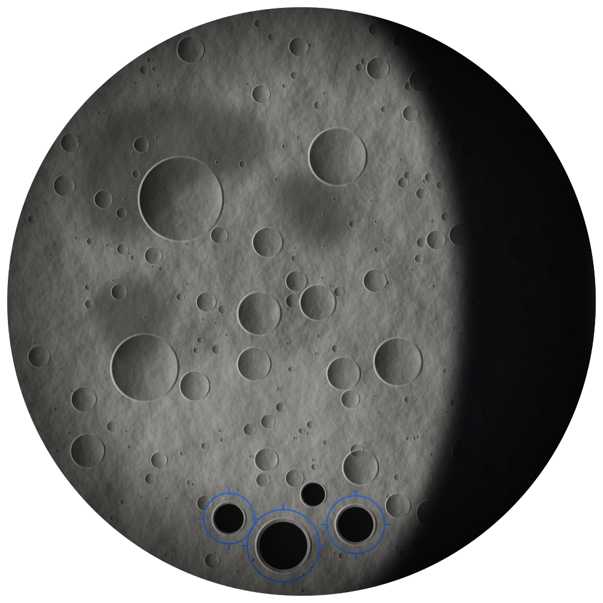
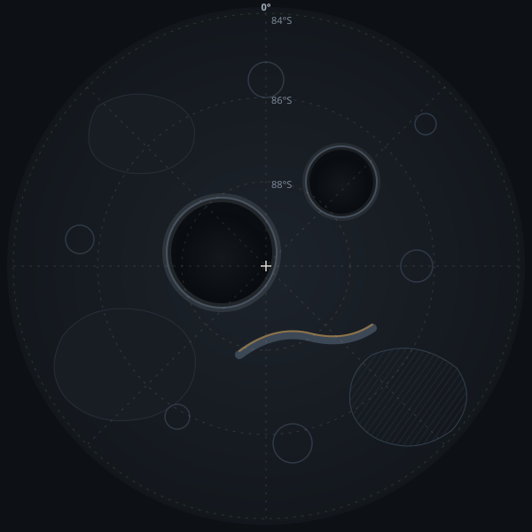

Mare Survey
A map of where water ice, oxygen, metals, and helium-3 probably are, with how sure we are and where the data came from.

Mare (say MAH-ray) shows where the Moon's water, oxygen, and metals are, what they'd cost to dig up and deliver, and gives buyers and sellers a place to make deals.
Drag the Moon to spin it, or click it to jump to the map.
The Moon has water ice, oxygen, and metals that could supply missions that now bring everything from Earth. But before anyone lends money, insures a delivery, or signs a deal, three things are missing.
Estimates of what's at each site are spread across different studies, use different units, and rarely say how sure they are. Two people can look at the same site and disagree.
Nobody knows what a ton should cost to dig up and deliver, so every deal starts from scratch.
There are no standard grades or contracts, so sellers can't sell ahead of time and buyers can't lock in supply.
Mare Survey
The Austral Reach is a made-up area near the Moon's south pole. Click a site to see what we think is there, how sure we are, and what a ton would cost to deliver.

Mare Ledger
Ledger keeps a price for each grade of product, based on what it costs to make and deliver. It gets updated as missions send back real numbers. The chart shows eight made-up quarters.
These grades are examples, not a real industry standard. Prices are in thousands of US dollars per ton.
Example data. The quarters and prices are made up. They aren't quotes, forecasts, or offers.
Mare Exchange
Every trade goes through the same five steps. Each one leaves a record the other side can check.
A seller lists a site, how much they'll supply, what grade, and when.
Mare checks the listing against the atlas and shows how sure the estimate is.
The offer is tied to the Ledger price for that grade, so both sides start from the same number.
A buyer agrees to it on standard terms, for delivery now or later.
Mare tracks the mining and the delivery, and checks the product meets its grade.
Mare Exchange is a design concept. Nothing here is an offer to buy or sell anything.
Mare doesn't mine or refine anything. It gives everyone else the information and the marketplace they need, through four products.
A map of where water ice, oxygen, metals, and helium-3 probably are, with how sure we are and where the data came from.
A price list. What it costs to mine, process, store, and deliver each resource at each site, updated as new data comes in.
A marketplace where sellers and buyers agree supply deals, using standard grades like rocket-grade liquid oxygen.
Tools for operators and agencies to hand out sites, track mining, and report on it, so nothing gets wasted or claimed twice.
Show what you've got and find buyers before you launch.
Get fuel and supplies at a price you know in advance.
Reliable data for lending to and insuring Moon deals.